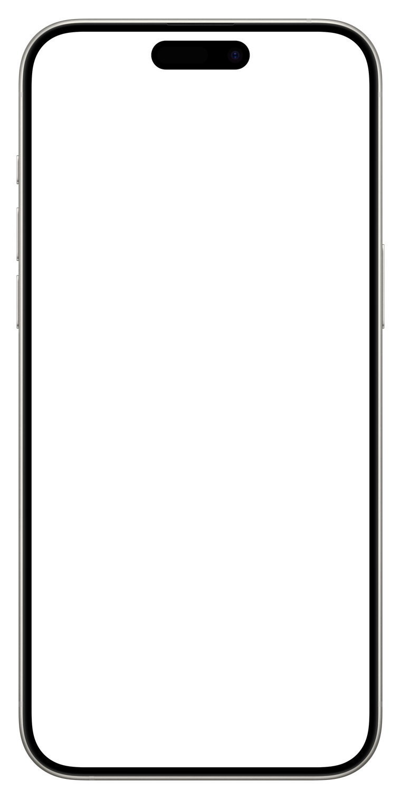
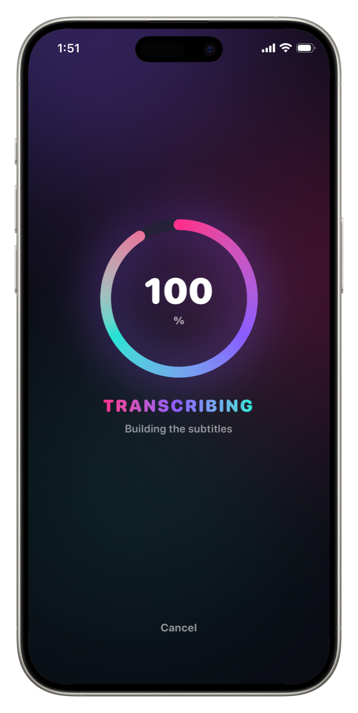
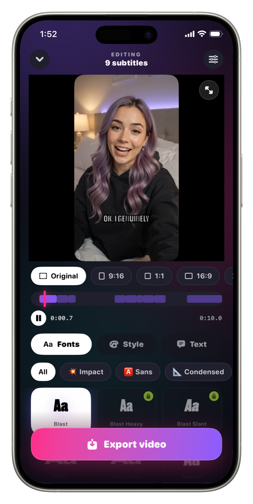
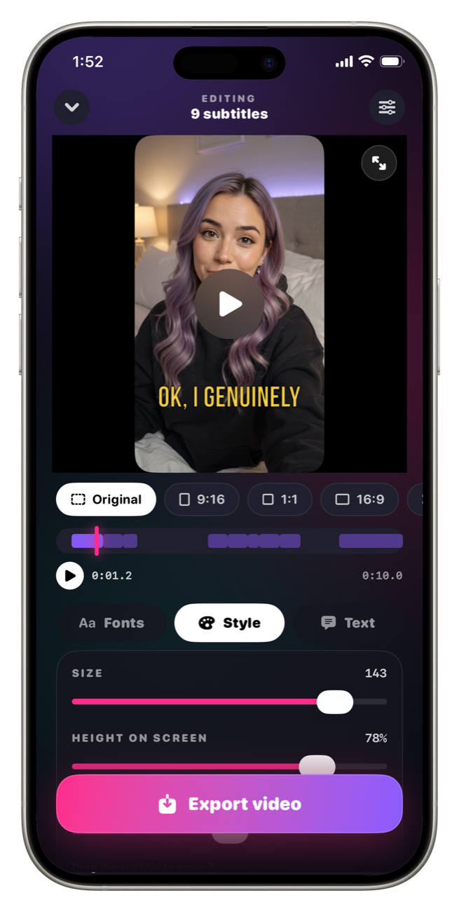
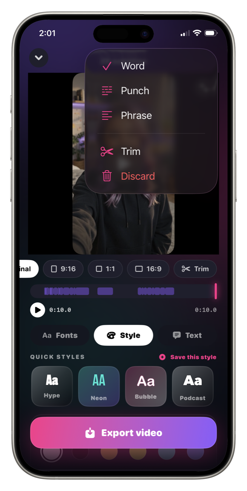
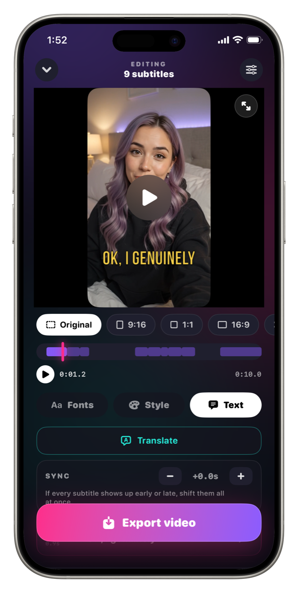
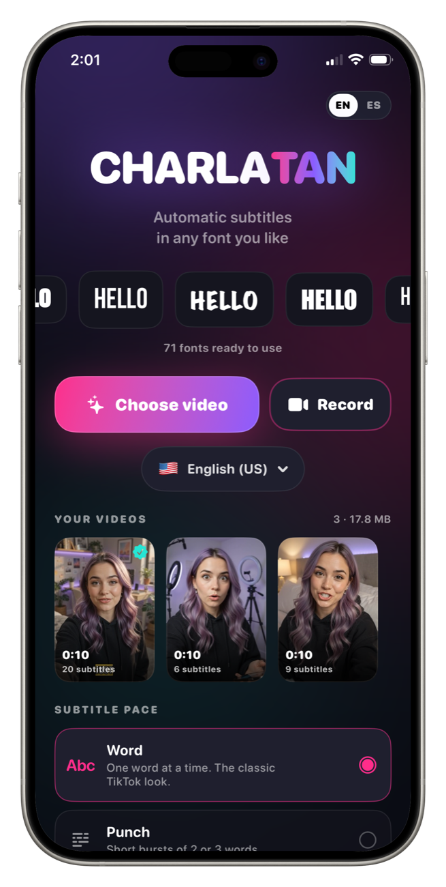
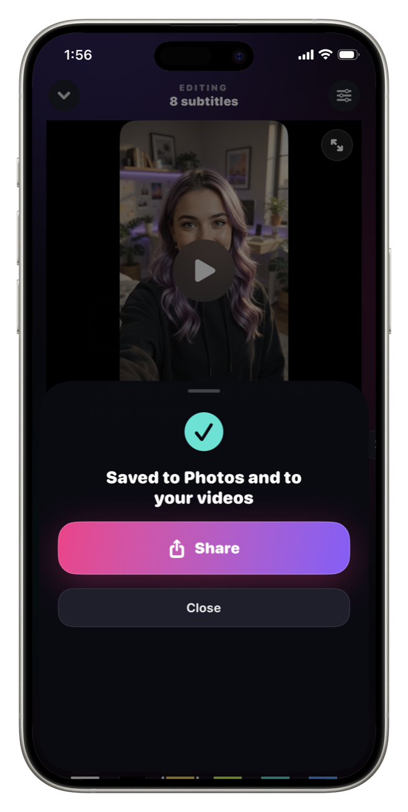

Add subtitles to your video in any font you like Ponele subtítulos a tu video con la tipografía que quieras
Charlatan listens to your video, writes every word you say, and lets you pick how it looks — from 78 fonts, not the same three everyone else is using. On your iPhone whenever it can be. Charlatan escucha tu video, escribe cada palabra que decís y vos elegís cómo se ve — entre 78 tipografías, no las mismas tres de siempre. En tu iPhone siempre que se pueda.
Free to start · No account · On-device whenever it can be Gratis para empezar · Sin cuenta · En tu iPhone siempre que se pueda

Drag the handle — same clip, with and without Charlatan. Arrastrá la manija — el mismo clip, con y sin Charlatan.
Your next video, subtitled.Tu próximo video, subtitulado.
Pick a clip, let it write itself, choose the font. The first one takes about two minutes.Elegí un clip, dejá que se escriba solo, elegí la tipografía. El primero lleva unos dos minutos.
Free on the App Store · iPhone · iOS 18 or later Gratis en el App Store · iPhone · iOS 18 o posterior
Every screen between a clip and a postCada pantalla entre un clip y un posteo
Most people watch with the sound off. What separates a clip that looks made from one that looks posted is the type on it.La mayoría mira sin sonido. Lo que separa un clip que parece hecho de uno que parece subido es la tipografía que lleva encima.

It writes every word you sayEscribe cada palabra que decís
Pick a clip or record one in the app. Charlatan transcribes the audio and times each word to the moment you said it — on the iPhone, with nothing uploaded anywhere.Elegí un clip o grabá uno en la app. Charlatan transcribe el audio y sincroniza cada palabra con el momento en que la dijiste — en el iPhone, sin subir nada a ningún lado.
How to add subtitles on iPhone →Cómo poner subtítulos en iPhone →
The font is the whole pointLa tipografía es el punto
Impact, condensed, handwritten, marker, stencil, serif. Every caption app gives you a default — Charlatan gives you a catalogue, previewed on your own video before you commit.Impact, condensadas, manuscritas, marcador, stencil, serif. Toda app de subtítulos te da una por defecto — Charlatan te da un catálogo, probado sobre tu propio video antes de decidir.
The best fonts for subtitles →Las mejores tipografías para subtítulos →
Word by word, right on timePalabra por palabra, en el momento justo
Each word lights up exactly when it is spoken, so reading and listening stay locked together. Size, tilt, colour, outline and marker are yours to set — then drag the caption anywhere.Cada palabra se enciende justo cuando se dice, así leer y escuchar quedan pegados. Tamaño, inclinación, color, contorno y marcador los definís vos — y arrastrás el subtítulo a donde quieras.
How karaoke captions work →Cómo funcionan los subtítulos karaoke →
Word. Punch. Phrase.Palabra. Punch. Frase.
One word at a time for the classic short-form look, bursts of two or three for rhythm, or full sentences that are easier to read. Switch between them and the timing recalculates itself.Una palabra a la vez para el look clásico del formato corto, golpes de dos o tres para el ritmo, o frases completas más fáciles de leer. Cambiás entre ellos y el timing se recalcula solo.
The TikTok caption look →El look de subtítulos de TikTok →
Record in one language, post in anotherGrabá en un idioma, publicá en otro
The same clip can go out with subtitles in nine languages. The footage cost you once — every extra language after that is a couple of minutes.El mismo clip puede salir con subtítulos en nueve idiomas. El material te costó una vez — cada idioma extra son un par de minutos.
How to translate subtitles →Cómo traducir subtítulos →
No account. Offline whenever it can be.Sin cuenta. Sin internet siempre que se pueda.
For every language your iPhone can transcribe offline — the major ones on a modern iPhone — the speech recognition runs on the phone itself and your audio never leaves it. Languages without an offline model are transcribed by Apple's speech servers, and the app tells you which is which before you start. There is nothing to sign up for either way.Para cada idioma que tu iPhone puede transcribir sin conexión — los principales en un iPhone moderno — el reconocimiento de voz corre en el teléfono y tu audio nunca sale de ahí. Los idiomas sin modelo sin conexión los transcriben los servidores de voz de Apple, y la app te avisa cuáles son antes de empezar. En ningún caso hay que registrarse.
Subtitles without internet →Subtítulos sin internet →
Captions that survive every platformSubtítulos que sobreviven a toda plataforma
The captions are rendered into the video frames themselves — no SRT file to attach or lose. Export 9:16, 1:1, 16:9 or the original framing, and it looks identical everywhere you post it.Los subtítulos quedan dibujados en los cuadros del video — sin archivo SRT que adjuntar ni perder. Exportá 9:16, 1:1, 16:9 o el encuadre original, y se ve igual en todos lados.
Burned-in vs SRT, explained →Quemados contra SRT, explicado →One caption, 78 personalitiesUn subtítulo, 78 personalidades
The same word changes character with every typeface — which is how your videos start looking like a channel instead of an app.La misma palabra cambia de carácter con cada tipografía — así es como tus videos empiezan a parecer un canal y no una app.
A rough taste rendered in your browser — the real set is 78 typefaces inside the app. Una muestra aproximada hecha en tu navegador — el set real son 78 tipografías dentro de la app.
Four steps. About two minutes.Cuatro pasos. Unos dos minutos.
No computer, no timeline editing, no typing out what you already said.Sin computadora, sin editar líneas de tiempo, sin tipear lo que ya dijiste.
Pick or recordElegí o grabá
Take a clip from your library, or shoot one straight into the app.Tomá un clip de tu galería, o filmá uno ahí mismo en la app.
It transcribesTranscribe solo
Every word, timed to when you said it. On the phone whenever it can be.Cada palabra, sincronizada con cuando la dijiste. En el teléfono siempre que se pueda.
Make it yoursHacelo tuyo
Font, pace, colour, outline, position. Save the style and reuse it.Tipografía, ritmo, color, contorno, posición. Guardá el estilo y reusalo.
ExportExportá
Burned into the file, ready to post anywhere. That's it.Quemado en el archivo, listo para publicar donde sea. Eso es todo.
Free to start. Pro when it earns it.Gratis para empezar. Pro cuando se lo gane.
FreeGratis
- ✓Automatic transcriptionTranscripción automática
- ✓15 fonts15 tipografías
- ✓The full style editorEl editor de estilo completo
- ✓Export with a small watermarkExportación con marca de agua chica
Charlatan Pro
- ✓All 78 fontsLas 78 tipografías
- ✓Karaoke word-by-word highlightResaltado karaoke palabra por palabra
- ✓Translation into 9 languagesTraducción a 9 idiomas
- ✓Reframe to 9:16, 1:1, 16:9Reencuadre a 9:16, 1:1, 16:9
- ✓Saved styles · any video lengthEstilos guardados · videos de cualquier duración
- ✓No watermarkSin marca de agua
Also $3.99 monthly, or $39.99 once — forever. Manage or cancel any time in Settings. También $3.99 mensual, o $39.99 una sola vez — para siempre. Se gestiona o cancela cuando quieras desde Ajustes.
How to get a specific lookCómo lograr un look concreto
For a specific platform, step by step — the question first, the app second.Para una plataforma concreta, paso a paso — primero la pregunta, después la app.
How to add subtitles to a video on iPhoneCómo poner subtítulos a un video en iPhone
The whole thing without a computer, in about two minutes.Todo el proceso sin computadora, en unos dos minutos.
Read the guideLeer la guía FontsTipografíasThe best fonts for subtitlesLas mejores tipografías para subtítulos
What stays readable on a phone, and why weight beats style.Qué se sigue leyendo en un teléfono, y por qué el peso gana al estilo.
Read the guideLeer la guía TikTokThe TikTok caption fontLa tipografía de subtítulos de TikTok
What top creators actually use, and how to get that look.Qué usan de verdad los creadores grandes, y cómo lograr ese look.
Read the guideLeer la guía KaraokeWord-by-word karaoke captionsSubtítulos karaoke palabra por palabra
The style that keeps the viewer's eye moving, and how to set it up.El estilo que mantiene el ojo en movimiento, y cómo configurarlo.
Read the guideLeer la guía ReelsAdd captions to Instagram ReelsPoner subtítulos a Reels de Instagram
Why burned-in captions beat the built-in ones, and the right export size.Por qué los quemados ganan a los nativos, y el tamaño correcto.
Read the guideLeer la guía ShortsAdd subtitles to YouTube ShortsPoner subtítulos a YouTube Shorts
Where to place the text so the interface doesn't cover it.Dónde poner el texto para que la interfaz no lo tape.
Read the guideLeer la guíaFrequently asked questionsPreguntas frecuentes
How do I add subtitles to a video on my iPhone?¿Cómo pongo subtítulos a un video en mi iPhone?
Open Charlatan, pick a clip from your library or record one in the app, and it transcribes the audio on the device. Choose a font and a pace, drag the subtitle where you want it, and export. The captions are burned into the video file, so they show up on every platform.Abrí Charlatan, elegí un clip de tu galería o grabá uno en la app, y transcribe el audio en el teléfono. Elegí una tipografía y un ritmo, arrastrá el subtítulo donde quieras y exportá. Los subtítulos quedan quemados en el archivo, así que se ven en todas las plataformas.
What is the best font for subtitles?¿Cuál es la mejor tipografía para subtítulos?
For video watched on a phone, a heavy condensed sans with a strong outline reads best — Impact, Bebas Neue, or a bold grotesque. Weight and contrast matter more than the typeface itself, because the caption has to survive a bright background and a small screen.Para video que se mira en el teléfono, lo que mejor se lee es una sans condensada pesada con contorno fuerte — Impact, Bebas Neue o una grotesca bold. El peso y el contraste importan más que la tipografía en sí, porque el subtítulo tiene que sobrevivir a un fondo brillante y a una pantalla chica.
Can I make word-by-word karaoke captions?¿Puedo hacer subtítulos karaoke palabra por palabra?
Yes. Charlatan has three paces — one word at a time, short punches of two or three words, or full sentences — and a karaoke highlight that lights each word up at the exact moment it is spoken. That is the style most short-form creators use.Sí. Charlatan tiene tres ritmos — una palabra a la vez, golpes de dos o tres palabras, o frases completas — y un resaltado karaoke que enciende cada palabra justo cuando se dice. Es el estilo que usa la mayoría de los creadores de formato corto.
Are the subtitles burned into the video or a separate file?¿Los subtítulos quedan quemados o en un archivo aparte?
Burned in. Charlatan renders the captions into the exported frames, so they survive being uploaded anywhere and look identical on every device. There is no SRT file to attach or lose.Quemados. Charlatan dibuja los subtítulos dentro de los cuadros exportados, así que sobreviven a cualquier subida y se ven iguales en todos los dispositivos. No hay archivo SRT que adjuntar ni perder.
Does Charlatan work without internet?¿Charlatan funciona sin internet?
For every language your iPhone can transcribe on-device — the major languages on a modern iPhone — yes: transcription, styling and export all work with no connection, and the audio never leaves your phone. Languages your iPhone has no offline model for are transcribed by Apple's speech servers and need a connection; the app marks them in the language picker and asks before the first use.Para cada idioma que tu iPhone puede transcribir en el dispositivo — los principales en un iPhone moderno — sí: transcribir, dar estilo y exportar funcionan sin conexión, y el audio nunca sale de tu teléfono. Los idiomas para los que tu iPhone no tiene modelo sin conexión los transcriben los servidores de voz de Apple y necesitan conexión; la app los marca en el selector de idioma y pregunta antes del primer uso.
Can I translate my subtitles into another language?¿Puedo traducir mis subtítulos a otro idioma?
Yes. Record in one language and export the subtitles in another — nine languages are available. You choose the audio language before transcribing, then translate the finished captions before export.Sí. Grabá en un idioma y exportá los subtítulos en otro — hay nueve idiomas disponibles. Elegís el idioma del audio antes de transcribir, y traducís los subtítulos listos antes de exportar.
Can I add captions to Instagram Reels and TikTok?¿Puedo poner subtítulos a Reels de Instagram y TikTok?
Yes. Export at 9:16 for Reels, TikTok and Shorts, 1:1 for the feed, or 16:9 for wide. Because the captions are burned in, they stay exactly as you styled them instead of being replaced by each platform's own caption tool.Sí. Exportá 9:16 para Reels, TikTok y Shorts, 1:1 para el feed, o 16:9 para pantalla ancha. Como los subtítulos están quemados, quedan tal cual les diste estilo en lugar de que los reemplace la herramienta de cada plataforma.
Is there a watermark on exported videos?¿Los videos exportados llevan marca de agua?
The free version adds a small Charlatan mark in the top-left corner. Charlatan Pro removes it. Nothing else about the export changes — same resolution, same quality.La versión gratis agrega una marca chica de Charlatan arriba a la izquierda. Charlatan Pro la saca. Nada más del export cambia — misma resolución, misma calidad.
How many fonts does Charlatan have?¿Cuántas tipografías tiene Charlatan?
78, grouped by category — impact, sans, condensed, handwritten, marker, stencil, serif — and you preview each one on your own video before choosing. 15 are free; the rest come with Charlatan Pro.78, agrupadas por categoría — impact, sans, condensadas, manuscritas, marcador, stencil, serif — y probás cada una sobre tu propio video antes de elegir. 15 son gratis; el resto vienen con Charlatan Pro.
Where should I put the subtitles in the frame?¿Dónde conviene poner los subtítulos en el cuadro?
Lower-middle third, above the platform's own interface. On Shorts and Reels the bottom fifth of the screen is covered by buttons and the caption text, so anything down there gets hidden. Charlatan lets you drag the subtitle anywhere and shows you exactly where it lands.En el tercio medio-bajo, arriba de la interfaz de la plataforma. En Shorts y Reels el quinto inferior queda tapado por los botones y el texto del posteo, así que todo lo que va ahí se pierde. Charlatan te deja arrastrar el subtítulo a donde quieras y te muestra exactamente dónde queda.
Your video is good.
Now make it look edited. Tu video está bien.
Ahora hacé que parezca editado.
Pick a clip, let it write itself, choose the font. You'll see the difference on the way out. Elegí un clip, dejá que se escriba solo, elegí la tipografía. La diferencia la ves saliendo.
Download on theDescargala en el App StoreFree to start · No account · Works offline Gratis para empezar · Sin cuenta · Funciona sin internet